토목산업기사 (2017-03-05 기출문제)
1과목: 응용역학
1. EI(E는 탄성계수, I는 단면2차 모멘트)가 커짐에 따른 보의 처짐은?
- 커진다.
- 작아진다.
- 커질 때도 있고 작아질 때도 있다.
- EI는 처짐에 관계하지 않는다.
(정답률: 76%)

2. 오일러 좌굴하중
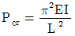
을 유도할 때 가정사항 중 틀린 것은?- 하중은 부재축과 나란하다.
- 부재는 초기 결함이 없다.
- 양단 핀 연결된 기둥이다.
- 부재는 비선형 탄성 재료로 되어 있다.
(정답률: 63%)
3. 동일한 재료 및 단면을 사용한 다음 기둥 중 좌굴하중이 가장 작은 기둥은?
- 양단 고정의 길이가 2L인 기둥
- 양단 힌지의 길이가 L인 기둥
- 일단 자유 타단 고정의 길이가 0.5L인 기둥
- 일단 힌지 타단 고정의 길이가 1.5L인 기둥
(정답률: 63%)
4. 외력을 받으면 구조물의 일부나 전체의 위치가 이동될 수 있는 상태를 무엇이라 하는가?
- 안정
- 불안정
- 정정
- 부정정
(정답률: 82%)
5. 그림의 트러스에서 CD 부재가 받는 부재응력은?
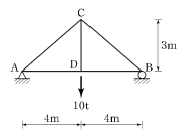
- 6.7t(인장)
- 8.3t(압축)
- 10t(인장)
- 10t(압축)
(정답률: 75%)
6. 아래 그림과 같은 단순보에서 지점 B의 반력은?
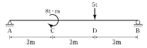
- 3.4t(↑)
- 4.2t(↑)
- 5t(↑)
- 6t(↑)
(정답률: 68%)
7. 그림과 같은 단면의 도심축(x-x축)에 대한 단면2차 모멘트는?
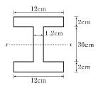
- 15004cm4
- 14004cm4
- 13004cm4
- 12004cm4
(정답률: 74%)
8. 단면이 10cm×10cm인 정사각형이고, 길이 1m인 강재에 10t의 압축력을 가했더니 길이가 0.1cm 줄어들었다. 이 강재의 탄성계수는?
- 10000kg/cm2
- 100000kg/cm2
- 50000kg/cm2
- 500000kg/cm2
(정답률: 58%)
9. 그림과 같은 캔틸레버보에서 휨모멘트에 의한 탄성 변형에너지는? (단, EI는 일정하다.)
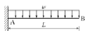
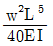
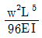
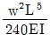
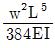
(정답률: 44%)
10. 다음 부정정보에서 지점 B의 수직 반력은 얼마인가? (단, EI는 일정함)
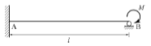
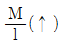
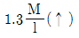
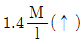
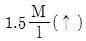
(정답률: 56%)
11. 단면의 성질중에서 폭 b, 높이가 h인 직사각형 단면의 단면 1차모멘트 및 단면 2차모멘트에 대한 설명으로 잘못된 것은?
- 단면의 도심축을 지나는 단면 1차모멘트는 0이다.
- 도심축에 대한 단면 2차모멘트는
 이다.
이다. - 직사각형 단면의 밑변축에 대한 단면 1차모멘트는
 이다.
이다. - 직사각형 단면의 밑변축에 대한 단면 2차모멘트는
 이다.
이다.
(정답률: 56%)
12. 평면응력을 받는 요소가 다음과 같이 응력을 받고 있다. 최대 주응력을 구하면?
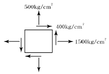
- 640kg/cm2
- 1640kg/cm2
- 3600kgv/cm2
- 1360kg/cm2
(정답률: 66%)
13. 지름 10cm, 길이 25cm인 재료에 축방향으로 인장력을 작용시켰더니 지름은 9.98cm로, 길이는 25.2cm로 변하였다. 이 재료의 포아송(Poisson)의 비는?
- 0.25
- 0.45
- 0.50
- 0.75
(정답률: 74%)
14. 그림과 같은 연속보에 대한 부정정 차수는?
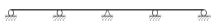
- 1차 부정정
- 2차 부정정
- 3차 부정정
- 4차 부정정
(정답률: 60%)
15. 그림과 같이 단순보의 B점에 모멘트 M이 작용할 때 A점에서의 처짐각(θA)은?
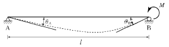
- Mℓ/3EI
- Mℓ/6EI
- Mℓ/12EI
- Mℓ/2EI
(정답률: 58%)
16. 다음 그림과 같은 단순보에서 전단력이 0이 되는 점은 A점에서 얼마만큼 떨어진 곳인가?
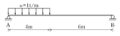
- 3.2m
- 3.5mm
- 4.2m
- 4.5m
(정답률: 52%)
17. 그림과 같이 부재의 자유단이 옆의 벽과 1mm 떨어져 있다. 부재의 온도가 현재보다 20℃ 상승할 때, 부재내에 생기는 열응력의 크기는? (단, E=20000kg/cm2, α=10-5/℃이다.)
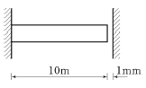
- 1kg/cm2
- 2kg/cm2
- 3kg/cm2
- 4kg/cm2
(정답률: 40%)
18. 폭이 30cm, 높이가 50cm인 직사각형 단면의 단순보에 전단력 6t이 작용할 때 이 보에 발생하는 최대전단응력은?
- 2kg/cm2
- 4kg/cm2
- 5kg/cm2
- 6kg/cm2
(정답률: 69%)
19. 그림과 같은 등분포 하중에서 최대 휨 모멘트가 생기는 위치에서 휨응력이 1200kgcm라고 하면 단면계수는?
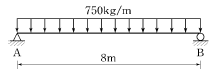
- 350cm3
- 400cm3
- 450cm3
- 500cm3
(정답률: 61%)
20. 트러스의 응력해석에서 가정 조건으로 옳지 않은 것은?
- 모든 부재는 축 응력만 받는다.
- 모든 절점에는 마찰이 작용하지 않는다.
- 모든 하중은 절점에만 작용한다.
- 모든 부재는 휨 응력을 받는다.
(정답률: 50%)
2과목: 측량학
21. 축척 1:600으로 평판측량을 할 때 앨리데이드의 외심 거리 24mm에 의하여 생기는 외심 오차는?
- 0.04mm
- 0.08mm
- 0.4mm
- 0.8mm
(정답률: 73%)
22. 노선측량에서 노선을 선정할 때 유의해야 할 사항으로 옳지 않은 것은?
- 배수가 잘 되는 곳으로 한다.
- 노선 선정시 가급적 직선이 좋다.
- 절토 및 성토의 운반거리를 가급적 짧게 한다.
- 가급적 성토 구간이 길고, 토공량이 많아야 한다.
(정답률: 70%)
23. 디지털카메라로 촬영한 항공사진측량의 일반적인 특징에 대한 설명으로 옳은 것은?
- 기상 상태에 관계없이 측량이 가능하다.
- 넓은 지역을 촬영한 사진은 정사투영이다.
- 다양한 목적에 따라 축척 변경이 용이하다.
- 기계 조작이 간단하고 현장에서 측량이 잘못된 곳을 발견하기 쉽다.
(정답률: 54%)
24. 그림과 같은 지역의 토공량은? (단, 각 구역의 크기는 동일하다.)
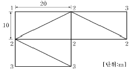
- 600m3
- 1200m3
- 1300m3
- 2600m3
(정답률: 60%)
25. 트래버스 측량의 일반적인 순서로 옳은 것은?
- 선점 –조표 –수평각 및 거리 관측 –답사 –계산
- 선점 –조표 –답사 –수평각 및 거리 관측 –계산
- 답사 –선점 –조표 –수평각 및 거리 관측 –계산
- 답사 –조표 –선점 –수평각 및 거리 관측 –계산
(정답률: 69%)
26. 삼각점 C에 기계를 세울 수 없어 B에 기계를 설치하여 T′=31°15′,40″를 얻었다면 T는? (단, e=25m,
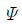
=295°20′, S1=1.5㎞, S2=2.0㎞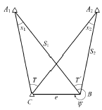
- 31°14′45″
- 31°13′54″
- 30°14′45″
- 30°07′42″
(정답률: 40%)
27. 지형도의 등고선 간격을 결정하는 데 고려하여야 할 사항과 거리가 먼 것은?
- 지형
- 축척
- 측량목적
- 측량거리
(정답률: 48%)
28. 초점거리 120mm, 비행고도 2500m로 촬영한 연직 사진에서 비고 300m인 작은 산의 축척은?
- 약 1/17500
- 약 1/18400
- 약 1/35000
- 약 1/45000
(정답률: 61%)
29. 우리나라의 노선측량에서 고속도로에 주로 이용되는 완화곡선은?
- 클로소이드 곡선
- 렘니스케이트 곡선
- 2차 포물선
- 3차 포물선
(정답률: 79%)
30. 도로설계에 있어서 캔트(cant)의 크기가 C인 곡선의 반지름과 설계속도를 모두 2배로 증가시키면 새로운 캔트의 크기는?
- 2C
- 4C
- C/2
- C/4
(정답률: 72%)
31. 거리측량에서 발생하는 오차 중에서 착오(과오)에 해당되는 것은?
- 줄자의 눈금이 표준자와 다를 때
- 줄자의 눈금을 잘못 읽었을 때
- 관측시 줄자의 온도가 표준온도와 다를 때
- 관측시 장력이 표준장력과 다를 때
(정답률: 75%)
32. 어떤 경사진 터널 내에서 수준측량을 실시하여 그림과 같은 결과를 얻었다. a=1.15m, b=1.56m, 경사거리(S)=31.69m, 연직각 α=+17°47′일 때 두 측점간의 고저차는?
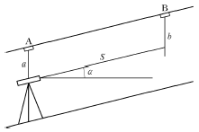
- 5.3m
- 8.04m
- 10.09m
- 12.43m
(정답률: 52%)
33. 축척 1:1000의 지형도를 이용하여 축적 1:5000 지형도를 제작하려고 한다. 1:5000 지형도 1장의 제작을 위해서는 1:1000 지형도 몇 장이 필요한가?
- 5매
- 10매
- 20매
- 25매
(정답률: 74%)
34. 매개변수 A=60m인 클로소이드 곡선길이가 30m일 때 종점에서의 곡선반지름은?
- 60m
- 90m
- 120m
- 150m
(정답률: 76%)
35. 500m의 거리를 50m의 줄자로 관측하였다. 줄자의 1회 관측에 의한 오차가 ±0.01m라면 전체 거리 관측값의 오차는?
- ±0.03m
- ±0.⑤m
- ±0.08m
- ±0.10m
(정답률: 60%)
36. 다음 표는 폐합트레버스 위거, 경거의 계산 결과이다. 면적을 구하기 위한 CD측선의 배횡거는?
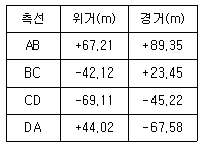
- 360.15m
- 311.23m
- 202.15m
- 180.38m
(정답률: 57%)
37. 표고 236.42m의 평탄지에서 거리 500m를 평균 해면상의 값으로 보정하려고 할 때, 보정량은?(단, 지구 반지름은 6370km로 한다.)
- -1.656cm
- -1.756cm
- -1.856cm
- -1.956cm
(정답률: 47%)
38. 하천측량 중 유속의 관측을 위하여 2점법을 사용할 때 필요한 유속은?
- 수면에서 수심의 20%와 60%인 곳의 유속
- 수면에서 수심의 20%와 80%인 곳의 유속
- 수면에서 수심의 40%와 60%인 곳의 유속
- 수면에서 수심의 40%와 80%인 곳의 유속
(정답률: 76%)
39. 수준측량 용어 중 지반고를 구하려고 할 때 기지점에 세운 표척의 읽음을 의미하는 것은?
- 전시
- 후시
- 표고
- 기계고
(정답률: 63%)
40. 토지의 면적계산에 사용되는 심프슨의 제1법칙은 그림과 같은 포물선 AMB의 면적(빗금친 부분)을 사각형 ABCD면적의 얼마로 보고 유도한 공식인가?
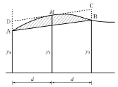
- 1/2
- 2/3
- 3/4
- 3/8
(정답률: 57%)
3과목: 수리학
41. 그림과 같이 물속에 잠긴 원판에 작용하는 전수압은? (단, 무게 1kg = 9.8N)
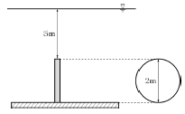
- 92.3kN
- 184.7kN
- 369.3kN
- 738.5kN
(정답률: 53%)
42. 레이놀즈(Reynolds)수가 1000인 관에 대한 마찰손실계수 f의 값은?
- 0.016
- 0.022
- 0.032
- 0.064
(정답률: 71%)
43. 개수로 흐름에서 수심이 1m, 유속이 3m/s이라면 흐름의 상태는?
- 사류(射流)
- 난류(亂流)
- 층류(層流)
- 상류(常流)
(정답률: 62%)
44. 도수(Hydraulic jump)현상에 관한 설명으로 옳지 않은 것은?
- 역적-운동량 방정식으로부터 유도할 수 있다.
- 상류에서 사류로 급변할 경우 발생한다.
- 도수로 인한 에너지 손실이 발생한다.
- 파상도수와 완전도수는 Froude 수로 구분한다.
(정답률: 62%)
45. 그림과 같이 원 관이 중심축에 수평하게 놓여있고 계기압력이 각각 1.8kg/cm2, 2.0kg/cm2일 때 유량은? (단, 압력계의 kg은 무게를 표시한다.)
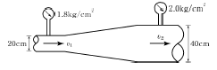
- 203L/s
- 223L/s
- 243L/s
- 263L/s
(정답률: 41%)
46. 개수로에서 중력가속도를 g, 수심을 h로 표시할 때 장파(長波)의 전파속도는?
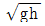
- gh
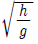
- h/g
(정답률: 76%)
47. 정상적인 흐름에서 한 유선 상의 유체입자에 대하여 그 속도수두 V2/2g, 압력수두 P/ωo, 위치수두 Z라면 동수경사로 옳은 것은?
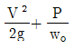
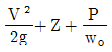
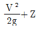
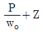
(정답률: 63%)
48. 그림에서 판 AB에 가해지는 힘 F는? (단, ρ는 밀도)
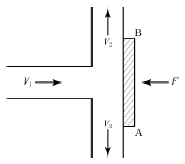
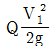
- ρQV1
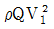
- ρQV2
(정답률: 54%)
49. 원관 내 흐름이 포물선형 유속분포를 가질 때, 관 중심선 상에서 유속이 Vo, 전단응력이 τo, 관 벽면에서 전단응력이 τs, 관 내의 평균유속이 Vm, 관 중심선에서 y만큼 떨어져 있는 곳의 유속이 V, 전단응력이 τ라 할때 옳지 않은 것은?
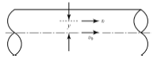
- Vo ＞ V
- Vo = 2Vm
- τs = 2τo
- τs ＞ τ
(정답률: 47%)
50. 2m×2m×2m인 고가수조에 관로를 통해 유입되는 물의 유입량이 0.15L/s일 때 만수가 되기까지 걸리는 시간은? (단, 현재 고가수조의 수심은 0.5m이다.)
- 5시간 20분
- 8시간 22분
- 10시간 5분
- 11시간 7분
(정답률: 50%)
51. Darcy의 법칙을 지하수에 적용시킬 때 가장 잘 일치하는 흐름은?
- 층류
- 난류
- 사류
- 상류
(정답률: 73%)
52. 수조1과 수조2를 단면적 A인 완전 수중 오리피스2개로 연결하였다. 수조1로부터 지속적으로 일정한 유량의 물을 수조2로 송수할 때 두 수조의 수면차(H)는? (단, 오리피스의 유량계수는 C이고, 접근유속수두(ha)는 무시한다.)
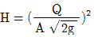
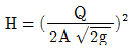
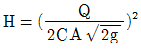
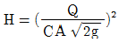
(정답률: 52%)
53. 압력을 P, 물의 단위무게를 WO라 할 때, P/Wo의 단위는?
- 시간
- 길이
- 질량
- 중량
(정답률: 60%)
54. Darcy 법칙에서 투수계수의 차원은?
- 동수경사의 차원과 같다.
- 속도수두의 차원과 같다.
- 유속의 차원과 같다.
- 점성계수의 차원과 같다.
(정답률: 49%)
55. 개수로를 따라 흐르는 한계류에 대한 설명으로 옳지 않은 것은?
- 주어진 유량에 대하여 비에너지(specific energy)가 최소이다.
- 주어진 비에너지에 대하여 유량이 최대이다.
- 후르드(Froude)수는 1이다.
- 일정한 유량에 대한 비력(specific force)이 최대이다.
(정답률: 53%)
56. 물의 점성계수의 단위는 g/cm⋅s이다. 동점성 계수의 단위는?
- cm3/s
- cm/s2
- s/cm2
- cm2/s
(정답률: 59%)
57. 부체가 물 위에 떠 있을 때, 부체의 중심(G)과 부심(C)의 거리 (
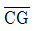
)를 e, 부심(C)과 경심(M)의 거리(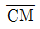
)를 a, 경심(M)에서 중심(G)까지의 거리(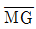
)를 b라 할 때, 부체의 안정조건은?- a ＞ e
- a＜ b
- b＜ e
- b ＞ e
(정답률: 61%)
58. 폭 7.0m의 수로 중간에 폭 2.5m의 직사각형 위어를 설치하였더니 월류수심이 0.35m이었다면 이 때 월류량은? (단, C=0.63이며 접근유속은 무시한다.)
- 0.401m3/s
- 0.439m3/s
- 0.963m3/s
- 1.444m3/s
(정답률: 34%)
59. 물의 흐름에서 단면과 유속 등 유동특성이 시간에 따라 변하지 않는 흐름은?
- 층류
- 난류
- 정상류
- 부정류
(정답률: 57%)
60. 지름 1m인 원형 관에 물이 가득차서 흐른다면 이 때의 경심은?
- 0.25m
- 0.5m
- 1.0m
- 2.0m
(정답률: 57%)
4과목: 철근콘크리트 및 강구조
61. 아래 그림과 같은 단철근 직사각형 보에서 필요한 최소 철근량(As, min)으로 옳은 것은? (단, fck=28MPa, fy=400MPa)
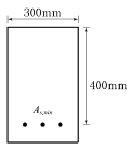
- 364mm2
- 397mm2
- 420mm2
- 468mm2
(정답률: 53%)
62. 콘크리트의 설계기준강도 fck=35MPa, 콘크리트의 압축강도 fc=8MPa일 때 콘크리트의 탄성변형에 의한 PS 강재의 프리스트레스 감소량은? (단, n은 7)
- 40MPa
- 48MPa
- 56MPa
- 64MPa
(정답률: 53%)
63. 직사각형 보에서 계수 전단력 Vu=70N을 전단철근 없이 지지하고자 할 경우 필요한 최소 유효깊이 d는 약 얼마인가? (단, bω=400mm, fck=20MPa, fy =350MPa)
- 426mm
- 587mm
- 627mm
- 751mm
(정답률: 52%)
64. 그림과 같은 판형(Plate Girder)의 각부 명칭으로 틀린 것은?
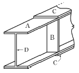
- A-상부판(Flange)
- B-보강재(Sriffener)
- C-덮개판(Cover plate)
- D-횡구(Bracing)
(정답률: 79%)
65. 강도설계법에서 fck=35MPa인 경우 β1의 값은?
- 0.795
- 0.801
- 0.823
- 0.85
(정답률: 73%)
66. 보통 콘크리트 부재의 해당 지속 하중에 대한 탄성처짐이 30mm이었다면 크리프 및 건조 수축에 따른 추가적인 장기 처짐을 고려한 최종 총 처짐량은 몇 mm인가? (단, 하중 재하 기간은 10년이고, 압축 철근비 ρ′는0.0⑤이다.)
- 78
- 68
- 58
- 48
(정답률: 67%)
67. 경간이 12m인 캔틸레버 보에서 처짐을 계산하지 않는 경우 보의 최소 두께로서 옳은 것은? (단, 보통중량 콘크리트를 사용한 경우로서 fck=28MPa, fy=400MPa이다.)
- 580mm
- 750mm
- 1200mm
- 1500mm
(정답률: 37%)
68. 인장 이형철근의 정착길이는 기본정착길이에 보정계수를 곱하여 산정한다. 이 때 보정계수 중 철근배치 위치계수(α)의 값으로 옳은 것은? (단, 상부철근으로서 정착길이 또는 겹침이음부 아래 300mm를 초과되게 굳지 않은 콘크리트를 친 수평철근인 경우)
- 1.2
- 1.3
- 1.4
- 1.5
(정답률: 58%)
69. 철근 콘크리트 부재에서 전단철근으로 부재축에 직각인 스터럽을 사용할 때 최대간격은 얼마이어야 하는가? (단, d는 부재의 유효깊이이며, Vs가 m2
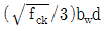
를 초과하지 않는 경우)- d와 400mm 중 최솟값 이하
- d와 600mm 중 최솟값 이하
- 0.5d와 400mm 중 최솟값 이하
- 0.5d와 600mm 중 최솟값 이하
(정답률: 54%)
70. 철근콘크리트 부재에 고정하중 30kN/m, 활하중 50kN/m가 작용한다면 소요강도(U)는?
- 73kN/m
- 116kN/m
- 127kN/m
- 155kN/m
(정답률: 69%)
71. 대칭 T형보에서 경간이 12m이고, 양쪽 슬래브의 중심간격이 1800mm, 플랜지의 두께 120mm, 복부의 폭 300mm일 때 플랜지의 유효폭은 얼마인가?
- 1800mm
- 2000mm
- 2220mm
- 2600mm
(정답률: 67%)
72. 아래의 표에서 설명하고 있는 프리스트레스트 콘크 리트의 개념은?
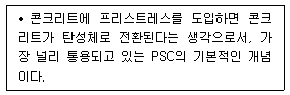
- 내력 모멘트의 개념
- 외력 모멘트의 개념
- 균등질 보의 개념
- 하중 평형의 개념
(정답률: 69%)
73. 그림과 같은 직사각형 단면에서 등가 직사각형 응력블록의 깊이(a)는? (단, fck=21MPa, fy=400MPa이다.)
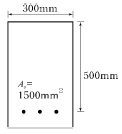
- 107mm
- 112mm
- 118mm
- 125mm
(정답률: 75%)
74. PS 강재에 요구되는 일반적인 성질로 틀린 것은?
- 인장강도가 클 것
- 항복비가 클 것
- 직선성이 좋을 것
- 릴랙세이션(Relaxation)이 클 것
(정답률: 60%)
75. bω=300mm, d=700mm인 단철근 직사각형 보에서 균형철근량을 구하면? (단, fck=21MPa, fy =240MPa)
- 11219mm2
- 10219mm2
- 9483mm2
- 9134mm2
(정답률: 61%)
76. 콘크리트의 부착에 관한 설명 중 틀린 것은?
- 이형 철근은 원형 철근보다 부착강도가 크다.
- 약간 녹슨 철근은 부착강도가 현저히 떨어진다.
- 콘크리트 강도가 커지면 부착강도가 커진다.
- 같은 철근량을 가질 경우 굵은 철근보다 가는 것을 여러 개 쓰는 것이 부착에 좋다.
(정답률: 67%)
77. 강도설계법으로 부재를 설계할 때 사용하중에 하중 계수를 곱한 하중을 무엇이라고 하는가?
- 하중조합
- 고정하중
- 활하중
- 계수하중
(정답률: 78%)
78. PSC에서 프리텐션 방식의 장점이 아닌 것은?
- PS 강재를 곡선으로 배치하기 쉽다.
- 정착장치가 필요하지 않다.
- 제품의 품질에 대한 신뢰도가 높다.
- 대량 제조가 가능하다.
(정답률: 70%)
79. 철근 콘크리트보에서 스터럽을 배근하는 이유로 가장 중요한 것은?
- 보에 작용하는 사인장응력에 의한 균열을 방지하기 위하여
- 주철근 상호의 위치를 정확하게 확보하기 위하여
- 콘크리트의 부착을 좋게 하기 위하여
- 압축을 받는 쪽의 좌굴을 방지하기 위하여
(정답률: 62%)
80. fck=24MPa, fy =400MPa일 때 인장을 받는 이형철근 D32(db=31.8mm, Ab=794.2mm2)의 기본정착길이 ldb는?
- 1275mm
- 1326mm
- 1558mm
- 1742mm
(정답률: 55%)
5과목: 토질 및 기초
81. 점토지반에 과거에 시공된 성토제방이 이미 안정된 상태에서, 홍수에 대비하기 위해 급속히 성토시공을 하고자 한다. 안정검토를 위해 지반의 강도정수를 구할때, 가장 적합한 시험방법은?
- 직접전단시험
- 압밀 배수시험
- 압밀 비배수시험
- 비압밀 비배수시험
(정답률: 60%)
82. 실내다짐시험 결과 최대건조 단위무게가 1.56t/m3이고, 다짐도가 95%일 때 현장건조 단위무게는 얼마인가?
- 1.36t/m3
- 1.48t/m3
- 1.60t/m3
- 1.64t/m3
(정답률: 62%)
83. 다음 중 직접기초에 속하는 것은?
- 후팅기초
- 말뚝기초
- 피어기초
- 케이슨기초
(정답률: 68%)
84. 점토의 예민비(sensitivity ratio)를 구하는데 사용되는 시험방법은?
- 일축압축시험
- 삼축압축시험
- 직접전단시험
- 베인전단시험
(정답률: 74%)
85. 그림과 같은 응벽에 작용하는 전체 주동토압을 구하면?
- 8.15t/m3
- 7.25t/m3
- 6.55t/m3
- 5.72t/m3
(정답률: 45%)
86. 흙의 분류방법 중 통일분류법에 대한 설명으로 틀린 것은?
- #200(0.075mm)체 통과율이 50%보다 작으면 조립토이다.
- 조립토 중 #4(4.75mm)체 통과율이 50%보다 작으면 자갈이다.
- 세립토에서 압축성의 높고 낮음을 분류할 때 사용하는 기준은 액성한계 35%이다.
- 세립토를 여러 가지로 세분하는 데는 액성한계와 소성지수의 관계 및 범위를 나타내는 소성도표가 사용된다.
(정답률: 52%)
87. 접지압의 분포가 기초의 중앙부분에 최대응력이 발생하는 기초형식과 지반은 어느 것인가?
- 연성기초, 점성지반
- 연성기초, 사질지반
- 강성기초, 점성지반
- 강성기초, 사질지반
(정답률: 58%)
88. 비중이 2.65, 간극률이 40%인 모래지반의 한계 동수경사는?
- 0.99
- 1.18
- 1.59
- 1.89
(정답률: 63%)
89. 모래 지반에 30cm×30cm 크기로 재하시험을 한결과 20t/m2 극한지지력을 얻었다. 3m×3m의 기초를 설치할 때 기대되는 극한 지지력은?
- 100t/m2
- 150t/m2
- 200t/m2
- 300t/m2
(정답률: 58%)
90. 점토지반에서 N치로 추정할 수 있는 사항이 아닌 것은?
- 상대밀도
- 컨시스턴시
- 일축압축강도
- 기초지반의 허용지지력
(정답률: 55%)
91. 연약 점토 지반에 말뚝 재하 시험을 하는 경우 말뚝을 타입한 후 20여일이 지난 다음 재하 시험을 하는 이유는?
- 말뚝 주위 흙이 압축되었기 때문
- 주면 마찰력이 작용하기 때문
- 부 마찰력이 생겼기 때문
- 타입시 말뚝 주변의 흙이 교란되었기 때문
(정답률: 74%)
92. 다음 중 흙의 다짐에 대한 설명으로 틀린 것은?
- 흙이 조립토에 가까울수록 최적함수비는 크다.
- 다짐에너지를 증가시키면 최적함수비는 감소한다.
- 동일한 흙에서 다짐에너지가 클수록 다짐효과는 증대한다.
- 최대건조단위중량은 사질토에서 크고 점성토일수록 작다.
(정답률: 37%)
93. 흙 댐에서 상류측이 가장 위험하게 되는 경우는?
- 수위가 점차 상승할 때이다.
- 댐이 수위가 중간정도 되었을 때이다.
- 수위가 갑자기 내려갔을 때이다.
- 댐내의 흐름이 정상 침투일 때이다.
(정답률: 72%)
94. 1m3 의 포화점토를 채취하여 습윤단위무게와 함수비를 측정한 결과 각각 1.68t/m3와 60%였다. 이 포화점토의 비중은 얼마인가?
- 2.14
- 2.84
- 1.58
- 1.31
(정답률: 42%)
95. 양면배수 조건일 때 일정한 양의 압밀침하가 발생하는데 10년이 걸린다면 일면배수 조건일 때 같은 침하가 발생되는데 몇 년이나 걸리겠는가?
- 5년
- 10년
- 30년
- 40년
(정답률: 58%)
96. 4m×6m크기의 직사각형 기초에 10t/m2 의 등분포하중이 작용할 때 기초 아래 5m 깊이에서의 지중응력증가량을 2:1 분포법으로 구한 값은?
- 1.42t/m2
- 1.82t/m2
- 2.42t/m2
- 2.82t/m2
(정답률: 56%)
97. 투수계수에 관한 설명으로 잘못된 것은?
- 투수계수는 수두차에 반비례한다.
- 수온이 상승하면 투수계수는 증가한다.
- 투수계수는 일반적으로 흙의 입자가 작을수록 작은 값을 나타낸다.
- 같은 종류의 흙에서 간극비가 증가하면 투수계수는 작아진다.
(정답률: 42%)
98. 흐트러진 흙을 자연 상태의 흙과 비교하였을 때 잘못된 설명은?
- 투수성이 크다.
- 간극이 크다.
- 전단강도가 크다.
- 압축성이 크다.
(정답률: 52%)
99. 다음 중 흙의 투수계수에 영향을 미치는 요소가 아닌 것은?
- 흙의 입경
- 침투액의 점성
- 흙의 포화도
- 흙의 비중
(정답률: 70%)
100. 다음 중 사운딩(sounding)이 아닌 것은?
- 표준관입시험(standard penetration test)
- 일축압축시험(unconfined compression test)
- 원추관입시험(cone penetrometer test)
- 베인시험(vane test)
(정답률: 56%)
6과목: 상하수도공학
101. 하수처리시설의 침사지에 대한 설명으로 옳지 않은 것은?
- 평균유속 1.5m/s를 표준으로 한다.
- 체류시간은 30~60초를 표준으로 한다.
- 수심은 유효수심에 모래퇴적부의 깊이를 더한 것으로 한다.
- 오수침사지의 경우 표면부하율은 1800m3/m2⋅d정도로 한다.
(정답률: 55%)
102. 급속여과지가 완속여과지에 비해 좋은 점이 아닌 것은?
- 많은 수량을 단기간에 처리할 수 있다.
- 부지면적을 적게 차지한다.
- 원수수질 변화에 대처할 수 있다.
- 시설이 단순하다.
(정답률: 55%)
103. 배수관 내에 큰 수격작용이 일어날 경우에 배수관의 손상을 방지하기 위하여 설치하는 것으로, 큰 수격작용이 일어나기 쉬운 곳에 설치하여 첨두압력을 긴급 방출함으로써 관로나 펌프를 보호하는 것은?
- 공기밸브
- 안전밸브
- 역지밸브
- 감압밸브
(정답률: 74%)
104. 펌프의 공동현상을 방지하는 방법 중 옳지 않은 것은?
- 펌프의 설치위치를 가능한 한 낮춘다.
- 흡입관의 손실을 가능한 한 작게 한다.
- 펌프의 회전속도를 낮게 선정한다.
- 가용유효흡입수두를 필요유효흡입수두보다 작게 한다.
(정답률: 38%)
1⑤. Jar-test의 시험목적으로 옳은 것은?
- 응집제 주입량 결정
- 염소 주입량 결정
- 염소 접촉시간 결정
- 총 수처리 시간의 결정
(정답률: 61%)
106. 도시하수가 하천으로 유입할 때 하천 내에서 발생하는 변화로 틀린 것은?
- 부유물의 증가
- COD의 증가
- BOD의 증가
- DO의 증가
(정답률: 67%)
107. 저수지의 유효용량을 유량누가곡선도표를 이용하여 도식적으로 구하는 방법은?
- Sherman법
- Ripple법
- Kutter법
- 도식적분법
(정답률: 71%)
108. 상수의 공급과정으로 옳은 것은?
- 취수 → 도수 → 정수 → 송수 → 배수 → 급수
- 취수 → 도수 → 정수 → 배수 → 송수 → 급수
- 취수 → 송수 → 도수 → 정수 → 배수 → 급수
- 취수 → 송수 → 배수 → 정수 → 도수 → 급수
(정답률: 78%)
109. 혐기성 소화에 의한 슬러지 처리법에서 발생되는 가스성분 중 가장 많은 양을 차지하는 것은? (단, 혐기성 소화가 정상적으로 일정하게 유지될 때로 가정한다.)
- 탄산가스
- 메탄가스
- 유화수소
- 황화수소
(정답률: 68%)
110. 유역면적 100ha, 유출계수 0.6, 강우강도 2mm/min인 지역의 합리식에 의한 우수량은?
- 20m3/s
- 2m3/s
- 30m3/s
- 3.3m3/s
(정답률: 40%)
111. 하수관거 접합에 관한 설명으로 옳지 않은 것은?g
- 2개의 관거가 합류하는 경우 두 관의 중심교각은 가급적 60° 이하로 한다.
- 지표의 경사가 급한 경우에는 원칙적으로 단차접합 또는 계단접합으로 한다.
- 2개의 관거가 합류하는 경우의 접합방법은 관저접합을 원칙으로 한다.
- 접속 관거의 계획수위를 일치시켜 접속하는 방법을 수면접합이라 한다.
(정답률: 48%)
112. 펌프의 특성곡선은 펌프의 토출유량과 무엇의 관계를 나타낸 그래프인가?
- 양정, 비속도, 수격압력
- 양정, 효율, 축동력
- 양정, 손실수두, 수격압력
- 양정, 효율, 공동현상
(정답률: 65%)
113. 관거별 계획 하수량에 대한 설명으로 옳은 것은?
- 우수관거는 계획우수량으로 한다.
- 오수관거는 계획1일최대오수량으로 한다.
- 차집관거에서는 청천시 계획오수량으로 한다.
- 합류식관거는 계획1일최대오수량에 계획우수량을 합한 것으로 한다.
(정답률: 45%)
114. 1일 정수량이 10000m3/d인 정수장에서, 염소소 독을 위하여 100kg/d를 주입한 후 잔류염소 농도를 측정하였을 때, 0.2mg/L였다면 염소요구량 농도는?
- 0.8mg/L
- 1.2mg/L
- 9.8mg/L
- 10.2mg/L
(정답률: 42%)
115. 어느 도시의 1인1일 BOD배출량이 평균 50g이고, 이 도시의 인구가 40000명이라고 할 때 하수처리장으로 유입되는 BOD 부하량은?
- 800kg/d
- 2000kg/d
- 2800kg/d
- 3000kg/d
(정답률: 52%)
116. 수원을 선택할 때 갖추어야 할 구비요건에 해당되지 않는 것은?
- 수량이 풍부하여야 한다.
- 수질이 좋아야 한다.
- 가능한 한 낮은 곳에 위치하여야 한다.
- 상수 소비지에서 가까운 곳에 위치하여야 한다.
(정답률: 69%)
117. 상수처리를 위한 침전지의 침전효율을 나타내는 지표인 표면부하율에 대한 설명으로 옳지 않은 것은?
- 표면부하율은 침전지에 유입할 유량을 침전지의 표면적으로 나눈 값이다.
- 표면부하율은 이상적인 침전지에서 유입구의 최상단으로부터 유입되어 유출구쪽에서 침전지 바닥에 침강되는 플록의 침강속도를 뜻한다.
- 표면부하율은 일반적으로 mm/min과 같이 속도의 차원을 가진다.
- 제거의 기준이 되는 표면부하율은 이론적으로 침전지의 수심에 직접적인 관계가 있다.
(정답률: 31%)
118. 하수처리방법 중 생물학적 처리방법이 아닌 것은?
- 산화구법
- 표준활성슬러지법
- 접촉산화법
- 중화처리법
(정답률: 56%)
119. 하수배제방식 중 분류식과 합류식에 관한 설명으로 틀린 것은?
- 분류식은 관거오접에 대한 철저한 감시가 필요하다.
- 우천 시 합류식이 분류식보다 처리장으로 토사 유입이 적다.
- 합류식이 분류식에 비해 시공이 용이하다.
- 분류식은 우천시 오수를 수역으로 방류하는 일이 없으므로 수질 오염 방지 상 유리하다.
(정답률: 56%)
120. ( )안에 들어갈 수치가 순서대로 바르게 짝지어진 것은?
- 0.3, 0.3, 0.3
- 0.3, 0.6, 0.6
- 0.3, 0.8, 0.6
- 0.6, 0.8, 3.0
(정답률: 65%)